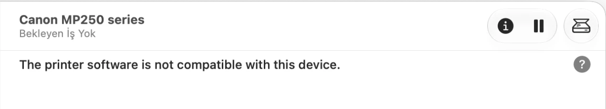

Printer stopped working after the macOS update?
Free fix for 3,608 Canon, Epson, HP, Brother, Samsung, Lexmark and other printers on Apple Silicon Macs. Install once, print again.

Install
- Plug the printer into the Mac with a USB cable and switch it on.
- Download the installer (.pkg) and open it. Click through, enter your Mac password. It is signed and notarized by Apple, so there are no security warnings.
- Print something. The installer recognised the printer and set it up as the default.
Still not printing? Restart the Mac once and unplug / re-plug the printer. Then see below.
Is my printer supported?
Type your model to check.
Not listed? Try just the model number. If it still isn't there, this driver doesn't support that printer. And if macOS already sets your printer up by itself (AirPrint), you don't need any of this.
Or browse by brand: Canon Epson HP Brother Samsung Lexmark Xerox Kyocera Ricoh Oki Dell Sharp Kodak Sony Mitsubishi DNP Fujifilm Panasonic all brands →
Questions
Why did my printer stop working?
The printer maker's driver was built for Intel Macs only. On Apple Silicon it ran through Rosetta until macOS 27, which no longer allows that, and the maker never released an Apple Silicon version. This installer replaces it with a native driver.
I had the printer maker's old driver installed. Anything to do?
Restart the Mac once after installing, then unplug and re-plug the printer. Canon's old driver in particular leaves a small kernel extension behind that blocks macOS's own USB printer driver; the installer moves the old driver aside (to /Users/Shared/printer-driver-backup, nothing is deleted) and macOS needs one restart to notice. Other makers' drivers are left in place.
Still on macOS 26 or earlier?
Your printer works now, but it will stop after you update if it uses one of those old drivers. You can install this before or after updating.
My printer is on Wi-Fi, not USB.
Install the package, then add the printer in System Settings → Printers & Scanners → Add, choose Use: Select Software… and pick the entry ending in “Apple Silicon”.
The installer didn't add my printer.
Search your model above; if it's supported you get a command to add it by hand. Open Terminal (⌘+Space, type Terminal), paste the command, press Enter, type your password.
Does the scanner on my all-in-one work?
No, only printing. For scanning use VueScan (paid) or SANE (free, more technical); both run natively on Apple Silicon.
Is it safe? Will macOS complain?
The installer is signed with an Apple Developer ID and notarized by Apple, so it opens without warnings. Everything it does is listed in SECURITY.md on GitHub and the install script is plain text you can read.
Is it free?
Yes. Free and open source, no account, nothing collected.
Which macOS versions?
Built and tested on macOS 27 on Apple Silicon. It should work on macOS 12 and later on M-series Macs.
It's free and always will be. If you'd like to say thanks, buy me a coffee via GitHub Sponsors.
How it works
The installer contains Gutenprint 5.3.4, the open source driver suite that has supported these printers on Linux for 20 years, compiled for arm64 and installed under /Library/Printers/Gutenprint, where Apple's print system can run it, plus a small helper (gutenprint-add) that writes the printer description file and creates the queue. Printing goes through Apple's own USB printer class driver, so nothing Intel-only is involved. Brother lasers without PCL or AirPrint (HL-1110, HL-2270DW, DCP-7065DN and similar) use the bundled native arm64 brlaser v6 driver. Full details, source and build scripts are on GitHub.